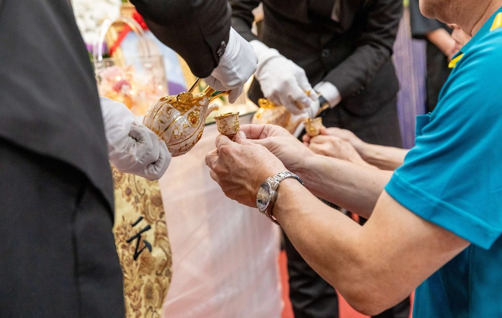

這裡整理告別式流程、拍攝準備、影像隱私與保存方式，陪正在做決定的家人，把事情一項一項想清楚。
文章不急著一次讀完。
可以先收藏，等有需要、也有力氣的時候再回來看。每一篇都希望讓家屬多一點理解，少一點慌張。
不是為了反覆觀看悲傷，而是替未來的自己，留下一段完整、可以被理解的家族記憶。
流程還沒完全確定也沒有關係。先從日期、地點與家人最在意的事情開始。

委託拍攝不等於授權宣傳。影像如何保存、分享與公開，都應由家屬決定。
接下來也會整理宗教儀式、照片保存、遠端直播，以及家屬在告別後如何整理影像等主題。